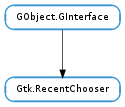

| Subclasses: | Gtk.RecentAction, Gtk.RecentChooserDialog, Gtk.RecentChooserMenu, Gtk.RecentChooserWidget |
|---|
| add_filter(filter) | |
| get_current_item() | |
| get_current_uri() | |
| get_filter() | |
| get_items() | |
| get_limit() | |
| get_local_only() | |
| get_select_multiple() | |
| get_show_icons() | |
| get_show_not_found() | |
| get_show_private() | |
| get_show_tips() | |
| get_sort_type() | |
| get_uris() | |
| list_filters() | |
| remove_filter(filter) | |
| select_all() | |
| select_uri(uri) | |
| set_current_uri(uri) | |
| set_filter(filter) | |
| set_limit(limit) | |
| set_local_only(local_only) | |
| set_select_multiple(select_multiple) | |
| set_show_icons(show_icons) | |
| set_show_not_found(show_not_found) | |
| set_show_private(show_private) | |
| set_show_tips(show_tips) | |
| set_sort_func(sort_func, *sort_data) | |
| set_sort_type(sort_type) | |
| unselect_all() | |
| unselect_uri(uri) |
| Name | Type | Flags | Description |
|---|---|---|---|
| filter | Gtk.RecentFilter | r/w | The current filter for selecting which resources are displayed |
| limit | int | r/w | The maximum number of items to be displayed |
| local-only | bool | r/w | Whether the selected resource(s) should be limited to local file: URIs |
| recent-manager | Gtk.RecentManager | w/c | The RecentManager object to use |
| select-multiple | bool | r/w | Whether to allow multiple items to be selected |
| show-icons | bool | r/w | Whether there should be an icon near the item |
| show-not-found | bool | r/w | Whether the items pointing to unavailable resources should be displayed |
| show-private | bool | r/w | Whether the private items should be displayed |
| show-tips | bool | r/w | Whether there should be a tooltip on the item |
| sort-type | Gtk.RecentSortType | r/w | The sorting order of the items displayed |
| Name | Parameters | Return | Description |
|---|---|---|---|
| item-activated | This signal is emitted when the user “activates” a recent item in the recent chooser. This can happen by double-clicking on an item in the recently used resources list, or by pressing Enter. | ||
| selection-changed | This signal is emitted when there is a change in the set of selected recently used resources. This can happen when a user modifies the selection with the mouse or the keyboard, or when explicitely calling functions to change the selection. |
Bases: GObject.GInterface
Gtk.RecentChooser is an interface that can be implemented by widgets displaying the list of recently used files. In GTK+, the main objects that implement this interface are Gtk.RecentChooserWidget, Gtk.RecentChooserDialog and Gtk.RecentChooserMenu.
Recently used files are supported since GTK+ 2.10.
| Parameters: | filter (Gtk.RecentFilter) – a Gtk.RecentFilter |
|---|
Adds filter to the list of Gtk.RecentFilter objects held by chooser.
If no previous filter objects were defined, this function will call Gtk.RecentChooser.set_filter ().
| Returns: | a Gtk.RecentInfo. Use Gtk.RecentInfo.unref () when when you have finished using it. |
|---|---|
| Return type: | Gtk.RecentInfo |
Gets the Gtk.RecentInfo currently selected by chooser.
| Returns: | a newly allocated string holding a URI. |
|---|---|
| Return type: | str |
Gets the URI currently selected by chooser.
| Returns: | a Gtk.RecentFilter object. |
|---|---|
| Return type: | Gtk.RecentFilter |
Gets the Gtk.RecentFilter object currently used by chooser to affect the display of the recently used resources.
| Returns: | A newly allocated list of Gtk.RecentInfo objects. You should use Gtk.RecentInfo.unref () on every item of the list, and then free the list itself using GLib.List.free (). |
|---|---|
| Return type: | [Gtk.RecentInfo] |
Gets the list of recently used resources in form of Gtk.RecentInfo objects.
The return value of this function is affected by the “sort-type” and “limit” properties of chooser.
| Returns: | A positive integer, or -1 meaning that all items are returned. |
|---|---|
| Return type: | int |
Gets the number of items returned by Gtk.RecentChooser.get_items () and Gtk.RecentChooser.get_uris ().
| Returns: | True if only local resources should be shown. |
|---|---|
| Return type: | bool |
Gets whether only local resources should be shown in the recently used resources selector. See Gtk.RecentChooser.set_local_only ()
| Returns: | True if chooser can select more than one item. |
|---|---|
| Return type: | bool |
Gets whether chooser can select multiple items.
| Returns: | True if the icons should be displayed, False otherwise. |
|---|---|
| Return type: | bool |
Retrieves whether chooser should show an icon near the resource.
| Returns: | True if the resources not found should be displayed, and False otheriwse. |
|---|---|
| Return type: | bool |
Retrieves whether chooser should show the recently used resources that were not found.
| Returns: | True if the recent chooser should show private items, False otherwise. |
|---|---|
| Return type: | bool |
Returns whether chooser should display recently used resources registered as private.
| Returns: | True if the recent chooser should show tooltips, False otherwise. |
|---|---|
| Return type: | bool |
Gets whether chooser should display tooltips containing the full path of a recently user resource.
| Returns: | the sorting order of the chooser. |
|---|---|
| Return type: | Gtk.RecentSortType |
Gets the value set by Gtk.RecentChooser.set_sort_type ().
| Returns: | A newly allocated, None-terminated array of strings. Use GLib.strfreev () to free it. |
|---|---|
| Return type: | [str] |
Gets the URI of the recently used resources.
The return value of this function is affected by the “sort-type” and “limit” properties of chooser.
Since the returned array is None terminated, length may be None.
| Returns: | A singly linked list of Gtk.RecentFilter objects. You should just free the returned list using GLib.SList.free (). |
|---|---|
| Return type: | [Gtk.RecentFilter] |
Gets the Gtk.RecentFilter objects held by chooser.
| Parameters: | filter (Gtk.RecentFilter) – a Gtk.RecentFilter |
|---|
Removes filter from the list of Gtk.RecentFilter objects held by chooser.
Selects all the items inside chooser, if the chooser supports multiple selection.
| Parameters: | uri (str) – a URI |
|---|---|
| Raises: | GLib.GError |
| Returns: | True if uri was found. |
| Return type: | bool |
Selects uri inside chooser.
| Parameters: | uri (str) – a URI |
|---|---|
| Raises: | GLib.GError |
| Returns: | True if the URI was found. |
| Return type: | bool |
Sets uri as the current URI for chooser.
| Parameters: | filter (Gtk.RecentFilter or None) – a Gtk.RecentFilter |
|---|
Sets filter as the current Gtk.RecentFilter object used by chooser to affect the displayed recently used resources.
| Parameters: | limit (int) – a positive integer, or -1 for all items |
|---|
Sets the number of items that should be returned by Gtk.RecentChooser.get_items () and Gtk.RecentChooser.get_uris ().
| Parameters: | local_only (bool) – True if only local files can be shown |
|---|
Sets whether only local resources, that is resources using the file:// URI scheme, should be shown in the recently used resources selector. If local_only is True (the default) then the shown resources are guaranteed to be accessible through the operating system native file system.
| Parameters: | select_multiple (bool) – True if chooser can select more than one item |
|---|
Sets whether chooser can select multiple items.
| Parameters: | show_icons (bool) – whether to show an icon near the resource |
|---|
Sets whether chooser should show an icon near the resource when displaying it.
| Parameters: | show_not_found (bool) – whether to show the local items we didn’t find |
|---|
Sets whether chooser should display the recently used resources that it didn’t find. This only applies to local resources.
| Parameters: | show_private (bool) – True to show private items, False otherwise |
|---|
Whether to show recently used resources marked registered as private.
| Parameters: | show_tips (bool) – True if tooltips should be shown |
|---|
Sets whether to show a tooltips containing the full path of each recently used resource in a Gtk.RecentChooser widget.
| Parameters: |
|
|---|
Sets the comparison function used when sorting to be sort_func. If the chooser has the sort type set to Gtk.RecentSortType.CUSTOM then the chooser will sort using this function.
To the comparison function will be passed two Gtk.RecentInfo structs and sort_data ; sort_func should return a positive integer if the first item comes before the second, zero if the two items are equal and a negative integer if the first item comes after the second.
| Parameters: | sort_type (Gtk.RecentSortType) – sort order that the chooser should use |
|---|
Changes the sorting order of the recently used resources list displayed by chooser.
Unselects all the items inside chooser.